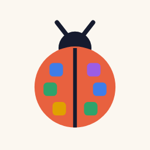

PolyCal
A calendar app for Android that puts all your calendars in one place and makes them easy to read.
- UpcomingAn endless feed of what's next, with free days shown just as clearly as busy ones.
- WeekA compact timeline with no empty hours, or a classic full-day grid.
- MonthThe whole month at a glance; tap a day to see it in full.
- Overlaps, sortedClashing events stack up neatly; tap to see them side by side.
- Shared calendarsAn event on several calendars shows once, marked with each calendar's color.
- Any calendarGoogle Calendar, plus .ics files and subscription links from Outlook, iCloud and more.
How PolyCal uses your Google Calendar
If you connect a Google account, PolyCal asks Google for permission to:
- See your calendars and events, to show them in PolyCal.
- Create, change and delete events, only when you do so in PolyCal. This permission is requested the first time you save an event to a Google calendar.
Your calendar data goes directly between your phone and Google. It is stored on your phone, is never sent to PolyCal's developer or anyone else, and is never used for advertising. You can disconnect at any time in the app, or from your Google Account permissions.
PolyCal's use and transfer to any other app of information received from Google APIs will adhere to the Google API Services User Data Policy, including the Limited Use requirements.
Questions?
See Help & FAQ, or email support@victoriawren.dev.